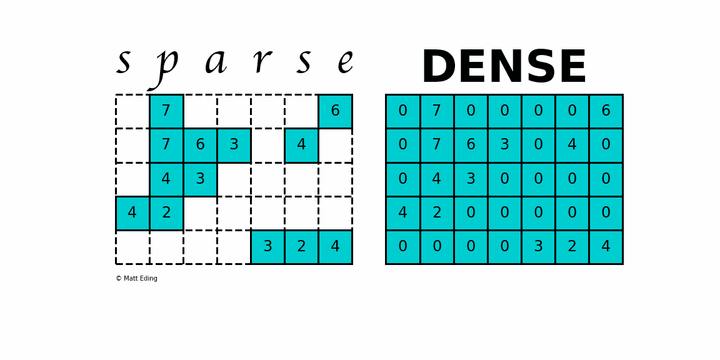
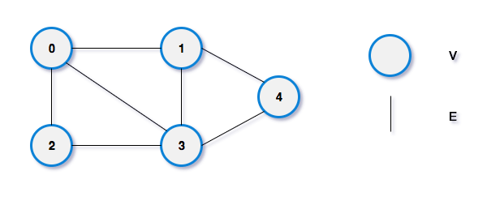
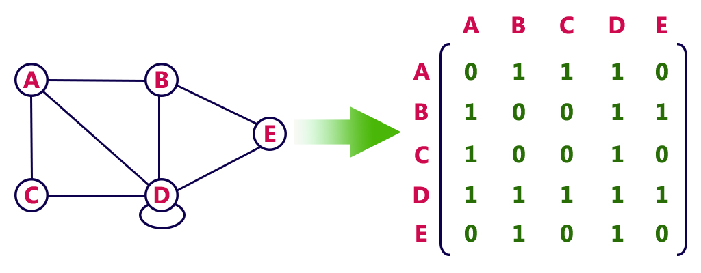
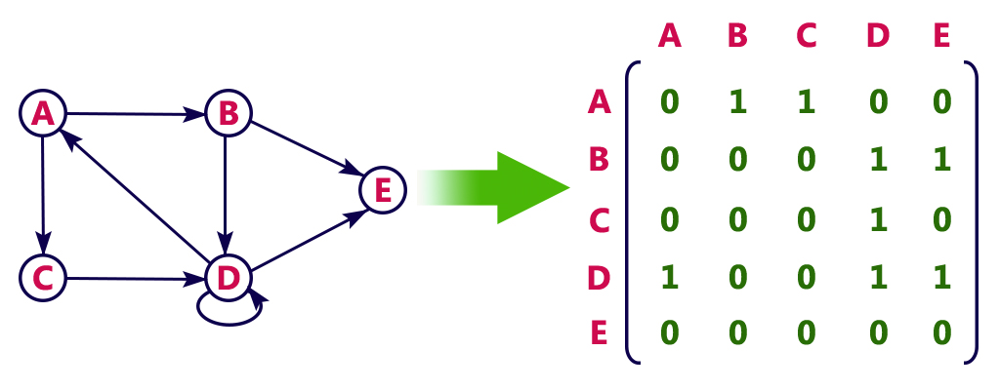
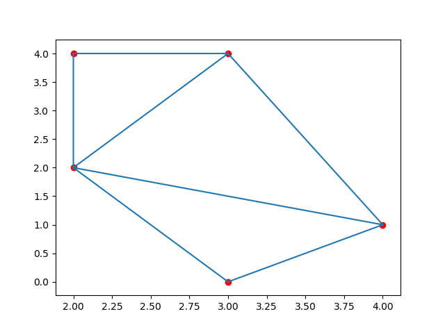
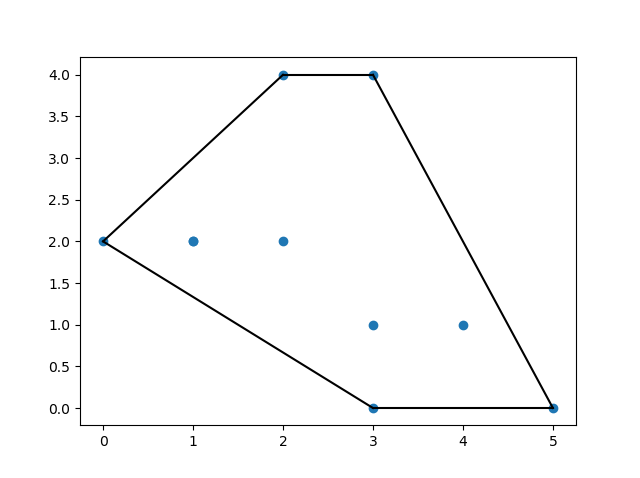
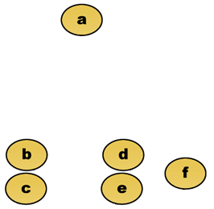
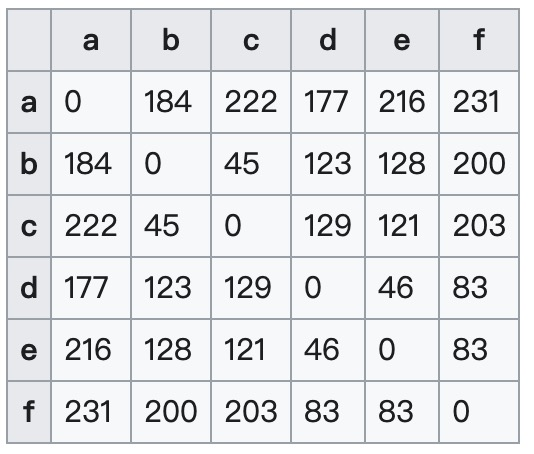
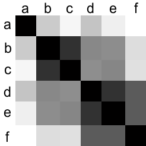
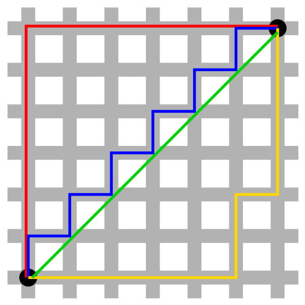

SciPy 是一个开源的 Python 算法库和数学工具包。
Scipy 是基于 Numpy 的科学计算库，用于数学、科学、工程学等领域，很多有一些高阶抽象和物理模型需要使用 Scipy。
SciPy 包含的模块有最优化、线性代数、积分、插值、特殊函数、快速傅里叶变换、信号处理和图像处理、常微分方程求解和其他科学与工程中常用的计算。
在开学习 SciPy 教程之前，我们需要具备基本的 Python 基础，如果你对 Python 还不了解，可以阅读我们的教程：
Scipy 是一个用于数学、科学、工程领域的常用软件包，可以处理最优化、线性代数、积分、插值、拟合、特殊函数、快速傅里叶变换、信号处理、图像处理、常微分方程求解器等。 。
SciPy 包含的模块有最优化、线性代数、积分、插值、特殊函数、快速傅里叶变换、信号处理和图像处理、常微分方程求解和其他科学与工程中常用的计算。
NumPy 和 SciPy 的协同工作可以高效解决很多问题，在天文学、生物学、气象学和气候科学，以及材料科学等多个学科得到了广泛应用。
本章节，我们使用 pip 工具来安装 SciPy 库，如果还未安装该工具，可以参考 Python pip 安装与使用。
升级 pip：
python3 -m pip install -U pip
安装 scipy 库：
python3 -m pip install -U scipy
安装完成后，我们就可以通过 from scipy import module 来导入 scipy 的库：
constants 是 scipy 的常量模块。
from scipy import constants以下实例，我们通过导入 scipy 库，然后查看 scipy 库的版本号：
执行以上代码，输出结果如下：
1.7.0
以下实例，我们通过导入 scipy 的常量模块 constants 来查看一英亩等于多少平方米：
执行以上代码，输出结果如下：
4046.8564223999992
以下列出了 SciPy 常用的一些模块及官网 API 地址：
| 模块名 | 功能 | 参考文档 |
|---|---|---|
| scipy.cluster | 向量量化 | cluster API |
| scipy.constants | 数学常量 | constants API |
| scipy.fft | 快速傅里叶变换 | fft API |
| scipy.integrate | 积分 | integrate API |
| scipy.interpolate | 插值 | interpolate API |
| scipy.io | 数据输入输出 | io API |
| scipy.linalg | 线性代数 | linalg API |
| scipy.misc | 图像处理 | misc API |
| scipy.ndimage | N 维图像 | ndimage API |
| scipy.odr | 正交距离回归 | odr API |
| scipy.optimize | 优化算法 | optimize API |
| scipy.signal | 信号处理 | signal API |
| scipy.sparse | 稀疏矩阵 | sparse API |
| scipy.spatial | 空间数据结构和算法 | spatial API |
| scipy.special | 特殊数学函数 | special API |
| scipy.stats | 统计函数 | stats.mstats API |
更多模块内容可以参考官方文档：https://docs.scipy.org/doc/scipy/reference/
SciPy 常量模块 constants 提供了许多内置的数学常数。
圆周率是一个数学常数，为一个圆的周长和其直径的比率，近似值约等于 3.14159，常用符号 来表示。
以下实例输出圆周率：
执行以上代码，输出结果如下：
3.141592653589793
以下实例输出黄金比例：
执行以上代码，输出结果如下：
1.618033988749895
我们可以使用 dir() 函数来查看 constants 模块包含了哪些常量：
执行以上代码，输出结果如下：
['Avogadro', 'Boltzmann', 'Btu', ...]
常量模块包含以下几种单位：
国际单位制词头（英语：SI prefix）表示单位的倍数和分数，目前有 20 个词头，大多数是千的整数次幂。 (centi 返回 0.01)：
|
1024 |
|
1021 |
|
1018 |
|
1015 |
|
1012 |
|
109 |
|
106 |
|
103 |
|
102 |
|
101 |
|
10−1 |
|
10−2 |
|
10−3 |
|
10−6 |
|
10−9 |
|
10−12 |
|
10−15 |
|
10−18 |
|
10−21 |
返回字节单位 (kibi 返回 1024)。
|
210 |
|
220 |
|
230 |
|
240 |
|
250 |
|
260 |
|
270 |
|
280 |
返回多少千克 kg。(gram 返回 0.001)。
返回弧度 (degree 返回 0.017453292519943295)。
返回秒数(hour 返回 3600.0)。
返回米数(nautical_mile 返回 1852.0)。
返回多少帕斯卡，压力的 SI 制单位。(psi 返回 6894.757293168361)。
返回多少平方米，平方米是面积的公制单位，其定义是：在一平面上，边长为一米的正方形之面积。(hectare 返回 10000.0)。
返回多少立方米，立方米容量计量单位，1 立方米的容量相当于一个长、宽、高都等于 1 米的立方体的体积，与 1 公秉和 1 度水的容积相等，也与1000000立方厘米的体积相等。(liter 返回 0.001)。
返回每秒多少米。(speed_of_sound 返回 340.5)。
返回多少开尔文。(zero_Celsius 返回 273.15)。
返回多少焦耳，焦耳（简称焦）是国际单位制中能量、功或热量的导出单位，符号为J。(calorie 返回 4.184)。
返回多少瓦特，瓦特（符号：W）是国际单位制的功率单位。1瓦特的定义是1焦耳/秒（1 J/s），即每秒钟转换，使用或耗散的（以安培为量度的）能量的速率。(horsepower 返回 745.6998715822701)。
返回多少牛顿，牛顿（符号为N，英语：Newton）是一种物理量纲，是力的公制单位。它是以建立经典力学（经典力学）的艾萨克·牛顿命名。。(kilogram_force 返回 9.80665)。
SciPy 的 optimize 模块提供了常用的数值优化与方程求解算法实现。
我们可以直接调用这些函数来解决实际问题，例如查找函数的最小值、最大值，或者求解方程的根等。
NumPy 本身主要关注数组计算和线性代数运算，它提供了用于多项式求根的工具（如 numpy.roots），
但并未提供通用的非线性方程数值求根接口。
当我们需要求解一般形式的非线性方程时，就需要使用 SciPy 的优化模块。
例如下面的非线性方程：
x + cos(x)
对于这类问题，可以使用 scipy.optimize.root 函数来求解。
该函数常用的两个核心参数如下：
root 函数返回一个结果对象（OptimizeResult），
其中包含求解状态、是否成功、函数值以及最终解等信息。
实际求得的解保存在返回对象的 x 属性中，示例如下：
查找 x + cos(x) = 0 方程的根：
执行以上代码，输出结果如下：
[-0.73908513]
如果直接打印返回对象，可以查看更完整的求解信息：
执行以上代码，输出结果如下：
fjac: array([[-1.]])
fun: array([0.])
message: 'The solution converged.'
nfev: 9
qtf: array([-2.66786593e-13])
r: array([-1.67361202])
status: 1
success: True
x: array([-0.73908513])
其中：
在数学和工程问题中，函数通常可以表示为一条曲线， 而曲线往往存在高点和低点。
曲线的高点称为最大值。
曲线的低点称为最小值。
整条曲线中的最高点称为全局最大值， 其余较高但不是最高的点称为局部最大值。
同理，整条曲线中的最低点称为全局最小值， 其余较低但不是最低的点称为局部最小值。
在 SciPy 中，可以使用 scipy.optimize.minimize() 函数来寻找函数的最小值。
minimize() 函数常用参数说明如下：
fun - 需要最小化的目标函数
x0 - 自变量的初始猜测值
method - 使用的优化算法名称，
常见可选值包括：
'CG'、'BFGS'、'Newton-CG'、
'L-BFGS-B'、'TNC'、
'COBYLA'、'SLSQP'
callback - 每次迭代结束后调用的回调函数
options - 其他控制参数的字典，例如：
{
"disp": boolean, # 是否打印详细的优化过程信息
"gtol": number # 梯度收敛容差（部分算法适用）
}
使用 BFGS 方法最小化函数 x² + x + 2：
执行以上代码，输出结果如下：
fun: 1.75
hess_inv: array([[0.50000001]])
jac: array([0.])
message: 'Optimization terminated successfully.'
nfev: 8
nit: 2
njev: 4
status: 0
success: True
x: array([-0.50000001])
从结果可以看到，函数在 x ≈ -0.5 处取得最小值，
对应的最小函数值为 1.75，
这与解析计算的结果一致。
minimize() 函数还支持带约束的优化问题，
可以通过 constraints 参数添加等式或不等式约束条件，
适用于更复杂的实际应用场景。
当目标函数无法直接求导时，可以选择 method='Nelder-Mead' 等无需梯度信息的优化算法，
这类方法通过单纯形搜索逐步逼近最优解。
在实际使用中，success 字段表示优化是否成功收敛，
fun 字段为最优目标函数值，
x 字段为最优解。
建议始终检查 success 状态，以确保求解结果是可靠的。
除了 root() 函数外，SciPy 还提供了 fsolve() 函数用于求解方程根，
它的使用更加简洁，适合快速求解简单方程。
使用 fsolve 求解 x + cos(x) = 0：
执行以上代码，输出结果如下：
[-0.73908513]
fsolve() 直接返回解的数组，而 root() 返回包含更多信息的结果对象。
对于只需要解的简单场景，fsolve 更加方便。
对于存在多个根的方程，从不同的初始值出发可能得到不同的根。
以下是求解 x² - 4 = 0 的两个根：
执行以上代码，输出结果如下：
初始值 -3 -> 根: -2.000000 初始值 0 -> 根: 2.000000 初始值 3 -> 根: 2.000000
在实际问题中，方程往往包含参数。我们可以通过 args 参数将额外参数传递给目标函数：
执行以上代码，输出结果如下：
解: -0.450184
minimize() 函数支持添加约束条件，包括等式约束和不等式约束。
以下是带约束优化问题的示例：
最小化 x² + y²，约束条件为 x + y = 1：
执行以上代码，输出结果如下：
最优解: x=0.500000, y=0.500000 最小值: 0.500000
约束类型 'eq' 表示等式约束（约束函数必须等于 0），
'ineq' 表示不等式约束（约束函数必须大于等于 0）。
除了函数约束外，还可以通过 bounds 参数限制自变量的取值范围：
在 x ∈ [0, 2] 范围内最小化 (x - 1)² + 2：
执行以上代码，输出结果如下：
最优解: x=1.000000 最小值: 2.000000
当目标函数不可导或导数难以计算时，可以使用无需梯度信息的优化算法，
如 Nelder-Mead 方法：
使用 Nelder-Mead 方法最小化 sin(x) + 0.5*x：
执行以上代码，输出结果如下：
最优解: x=-1.047198 最小值: -1.523599 是否成功: True
success 字段，
确保算法成功收敛。如果求解失败，可以尝试更换初始值或优化算法。
BFGS 是较好的默认选择；
对于大维度问题，可以尝试 L-BFGS-B；
对于不可导函数，使用 Nelder-Mead。
args 参数传递额外参数，
避免使用全局变量。
SciPy 的 optimize 模块提供了强大的优化和方程求解工具：
root() 和 fsolve() 用于求解非线性方程minimize() 配合 method 参数实现多种算法constraints 参数添加等式和不等式约束bounds 参数限制变量取值范围Nelder-Mead 适用于不可导函数
掌握这些基本功能后，读者可以进一步探索 optimize 模块的更多特性，
如曲线拟合（curve_fit）、全局优化（basinhopping、differential_evolution）等高级功能。
稀疏矩阵（英语：sparse matrix）指的是在数值分析中绝大多数数值为零的矩阵。反之，如果大部分元素都非零，则这个矩阵是稠密的(Dense)。
在科学与工程领域中求解线性模型时经常出现大型的稀疏矩阵。

上图中左边就是一个稀疏矩阵，可以看到包含了很多 0 元素，右边是稠密的矩阵，大部分元素不是 0。
看一个简单例子：
上述稀疏矩阵仅包含 9 个非零元素，另外包含 26 个零元。其稀疏度为 74%，密度为 26%。
SciPy 的 scipy.sparse 模块提供了处理稀疏矩阵的函数。
我们主要使用以下两种类型的稀疏矩阵：
本章节我们主要使用 CSR 矩阵。
我们可以通过向 scipy.sparse.csr_matrix() 函数传递数组来创建一个 CSR 矩阵。
创建 CSR 矩阵。
import numpy as np
from scipy.sparse import csr_matrix
arr = np.array([0, 0, 0, 0, 0, 1, 1, 0, 2])
print(csr_matrix(arr))
以上代码输出结果为：
(0, 5) 1 (0, 6) 1 (0, 8) 2
结果解析：
我们可以使用 data 属性查看存储的数据（不含 0 元素）：
以上代码输出结果为：
[1 1 2]
使用 count_nonzero() 方法计算非 0 元素的总数：
以上代码输出结果为：
3
使用 eliminate_zeros() 方法删除矩阵中 0 元素：
以上代码输出结果为：
(1, 2) 1 (2, 0) 1 (2, 2) 2
使用 sum_duplicates() 方法来删除重复项:
以上代码输出结果为：
(1, 2) 1 (2, 0) 1 (2, 2) 2
csr 转换为 csc 使用 tocsc() 方法：
(2, 0) 1 (1, 2) 1 (2, 2) 2
图结构是算法学中最强大的框架之一。
图是各种关系的节点和边的集合，节点是与对象对应的顶点，边是对象之间的连接。
SciPy 提供了 scipy.sparse.csgraph 模块来处理图结构。
邻接矩阵（Adjacency Matrix）是表示顶点之间相邻关系的矩阵。
邻接矩阵逻辑结构分为两部分：V 和 E 集合，其中，V 是顶点，E 是边，边有时会有权重，表示节点之间的连接强度。

用一个一维数组存放图中所有顶点数据，用一个二维数组存放顶点间关系（边或弧）的数据，这个二维数组称为邻接矩阵。
看下下图实例：
顶点有 A、B、C，边权重有 1 和 2。
A 与 B 是连接的，权重为 1。
A 与 C 是连接的，权重为 2。
C 与 B 是没有连接的。
这个邻接矩阵可以表示为以下二维数组：
A B C
A:[0 1 2]
B:[1 0 0]
C:[2 0 0]
邻接矩阵又分为有向图邻接矩阵和无向图邻接矩阵。
无向图是双向关系，边没有方向：

有向图的边带有方向，是单向关系：
注：上面两个图中的 D 节点是自环，自环是指一条边的两端为同一个节点。
查看所有连接组件使用 connected_components() 方法。
以上代码输出结果为：
(1, array([0, 0, 0], dtype=int32))
Dijkstra(迪杰斯特拉)最短路径算法，用于计算一个节点到其他所有节点的最短路径。
Scipy 使用 dijkstra() 方法来计算一个元素到其他元素的最短路径。
dijkstra() 方法可以设置以下几个参数：查找元素 1 到 2 的最短路径：
import numpy as np以上代码输出结果为：
(array([ 0., 1., 2.]), array([-9999, 0, 0], dtype=int32))
弗洛伊德算法算法是解决任意两点间的最短路径的一种算法。
Scipy 使用 floyd_warshall() 方法来查找所有元素对之间的最短路径。
查找所有元素对之间的最短路径径：
import numpy as np以上代码输出结果为：
(array([[ 0., 1., 2.],
[ 1., 0., 3.],
[ 2., 3., 0.]]), array([[-9999, 0, 0],
[ 1, -9999, 0],
[ 2, 0, -9999]], dtype=int32))
贝尔曼-福特算法是解决任意两点间的最短路径的一种算法。
Scipy 使用 bellman_ford() 方法来查找所有元素对之间的最短路径，通常可以在任何图中使用，包括有向图、带负权边的图。
使用负权边的图查找从元素 1 到元素 2 的最短路径：
import numpy as np以上代码输出结果为：
(array([ 0., -1., 2.]), array([-9999, 0, 0], dtype=int32))
depth_first_order() 方法从一个节点返回深度优先遍历的顺序。
可以接收以下参数：
给定一个邻接矩阵，返回深度优先遍历的顺序：
import numpy as np以上代码输出结果为：
(array([1, 0, 3, 2], dtype=int32), array([ 1, -9999, 1, 0], dtype=int32))
breadth_first_order() 方法从一个节点返回广度优先遍历的顺序。
可以接收以下参数：
给定一个邻接矩阵，返回广度优先遍历的顺序：
import numpy as np以上代码输出结果为：
(array([1, 0, 2, 3], dtype=int32), array([ 1, -9999, 1, 1], dtype=int32))
空间数据又称几何数据，它用来表示物体的位置、形态、大小分布等各方面的信息，比如坐标上的点。
SciPy 通过 scipy.spatial 模块处理空间数据，比如判断一个点是否在边界内、计算给定点周围距离最近点以及给定距离内的所有点。
三角测量在三角学与几何学上是一借由测量目标点与固定基准线的已知端点的角度，测量目标距离的方法。
多边形的三角测量是将多边形分成多个三角形，我们可以用这些三角形来计算多边形的面积。
拓扑学的一个已知事实告诉我们：任何曲面都存在三角剖分。
假设曲面上有一个三角剖分， 我们把所有三角形的顶点总个数记为 p(公共顶点只看成一个)，边数记为 a，三角形的个数记为 n，则 e=p-a+n 是曲面的拓扑不变量。 也就是说不管是什么剖分，e 总是得到相同的数值。 e 被称为称为欧拉示性数。
对一系列的点进行三角剖分点方法是 Delaunay() 三角剖分。
通过给定的点来创建三角形：
import numpy as np输出结果如下图所示：

注：三角形顶点的 id 存储在三角剖分对象的 simplices 属性中。
凸包（Convex Hull）是一个计算几何（图形学）中的概念。
在一个实数向量空间 V 中，对于给定集合 X，所有包含 X 的凸集的交集 S 被称为 X 的凸包。X 的凸包可以用 X 内所有点(X1，...Xn)的凸组合来构造。
我们可以使用 ConvexHull() 方法来创建凸包。
通过给定的点来创建凸包：
import numpy as np输出结果如下图所示：

kd-tree（k-dimensional树的简称），是一种对k维空间中的实例点进行存储以便对其进行快速检索的树形数据结构。主要应用于多维空间关键数据的搜索（如：范围搜索和最近邻搜索）。
K-D 树可以使用在多种应用场合，如多维键值搜索（范围搜寻及最邻近搜索）。
最邻近搜索用来找出在树中与输入点最接近的点。
KDTree() 方法返回一个 KDTree 对象。
query() 方法返回最邻近距离和最邻近位置。
查找到 (1,1) 的最邻近距离:
from scipy.spatial import KDTree输出结果如下图所示：
(2.0, 0)
在数学中, 一个距离矩阵是一个各项元素为点之间距离的矩阵（二维数组）。因此给定 N 个欧几里得空间中的点，其距离矩阵就是一个非负实数作为元素的 N×N 的对称矩阵距离矩阵和邻接矩阵概念相似，其区别在于后者仅包含元素（点）之间是否有连边，并没有包含元素（点）之间的连通的距离的讯息。因此，距离矩阵可以看成是邻接矩阵的加权形式。
举例来说，我们分析如下二维点 a 至 f。在这里，我们把点所在像素之间的欧几里得度量作为距离度量。

其距离矩阵为：

距离矩阵的这些数据可以进一步被看成是图形表示的热度图（如下图所示），其中黑色代表距离为零，白色代表最大距离。

在生物信息学中，距离矩阵用来表示与坐标系无关的蛋白质结构，还有序列空间中两个序列之间的距离。这些表示被用在结构比对，序列比对，还有在核磁共振，X射线和结晶学中确定蛋白质结构。
在数学中，欧几里得距离或欧几里得度量是欧几里得空间中两点间"普通"（即直线）距离。使用这个距离，欧氏空间成为度量空间。相关联的范数称为欧几里得范数。较早的文献称之为毕达哥拉斯度量。
欧几里得度量（euclidean metric）（也称欧氏距离）是一个通常采用的距离定义，指在m维空间中两个点之间的真实距离，或者向量的自然长度（即该点到原点的距离）。在二维和三维空间中的欧氏距离就是两点之间的实际距离。
以下实例查看给定点之间的欧几里德距离：
输出结果如下图所示：
9.21954445729
出租车几何或曼哈顿距离（Manhattan Distance）是由十九世纪的赫尔曼·闵可夫斯基所创词汇 ，是种使用在几何度量空间的几何学用语，用以标明两个点在标准坐标系上的绝对轴距总和。
曼哈顿距离 只能上、下、左、右四个方向进行移动，并且两点之间的曼哈顿距离是两点之间的最短距离。
曼哈顿与欧几里得距离： 红、蓝与黄线分别表示所有曼哈顿距离都拥有一样长度（12），而绿线表示欧几里得距离有6×√2 ≈ 8.48的长度。

以下实例通过给点的点计算曼哈顿距离：
输出结果为：
11
余弦距离，也称为余弦相似度，通过测量两个向量的夹角的余弦值来度量它们之间的相似性。
0 度角的余弦值是 1，而其他任何角度的余弦值都不大于 1，并且其最小值是 -1。
以下实例计算 A 与 B 两点的余弦距离：
输出结果为：
0.019419324309079777
在信息论中，两个等长字符串之间的汉明距离（英语：Hamming distance）是两个字符串对应位置的不同字符的个数。换句话说，它就是将一个字符串变换成另外一个字符串所需要替换的字符个数。
汉明重量是字符串相对于同样长度的零字符串的汉明距离，也就是说，它是字符串中非零的元素个数：对于二进制字符串来说，就是 1 的个数，所以 11101 的汉明重量是 4。
以下实例计算两个点之间的汉明距离：
输出结果为：
0.666666666667
NumPy 提供了 Python 可读格式的数据保存方法。
SciPy 提供了与 Matlab 的交互的方法。
SciPy 的 scipy.io 模块提供了很多函数来处理 Matlab 的数组。
savemat() 方法可以导出 Matlab 格式的数据。
该方法参数有：将数组作为变量 "vec" 导出到 mat 文件：
注意：上面的代码会在您的计算机上保存了一个名为 "arr.mat" 的文件。
loadmat() 方法可以导入 Matlab 格式数据。
该方法参数：
返回一个结构化数组，其键是变量名，对应的值是变量值。
以下实例从 mat 文件中导入数组：
返回结果如下：
{
'__header__': b'MATLAB 5.0 MAT-file Platform: nt, Created on: Tue Sep 22 13:12:32 2020',
'__version__': '1.0',
'__globals__': [],
'vec': array([[0, 1, 2, 3, 4, 5, 6, 7, 8, 9]])
}
使用变量名 "vec" 只显示 matlab 数据的数组：
返回结果如下：
[[0 1 2 3 4 5 6 7 8 9]]
从结果可以看出数组最初是一维的，但在提取时它增加了一个维度，变成了二维数组。
解决这个问题可以传递一个额外的参数 squeeze_me=True：
返回结果如下：
[0 1 2 3 4 5 6 7 8 9]
在数学的数值分析领域中，插值（英语：interpolation）是一种通过已知的、离散的数据点，在范围内推求新数据点的过程或方法。
简单来说插值是一种在给定的点之间生成点的方法。
例如：对于两个点 1 和 2，我们可以插值并找到点 1.33 和 1.66。
插值有很多用途，在机器学习中我们经常处理数据缺失的数据，插值通常可用于替换这些值。
这种填充值的方法称为插补。
除了插补，插值经常用于我们需要平滑数据集中离散点的地方。
SciPy 提供了 scipy.interpolate 模块来处理插值。
该方法接收两个参数 x 点和 y 点。
返回值是可调用函数，该函数可以用新的 x 调用并返回相应的 y，y = f(x)。
对给定的 xs 和 ys 插值，从 2.1、2.2... 到 2.9：
输出结果为：
[5.2 5.4 5.6 5.8 6. 6.2 6.4 6.6 6.8]
注意：新的 xs 应该与旧的 xs 处于相同的范围内，这意味着我们不能使用大于 10 或小于 0 的值调用 interp_func()。
在一维插值中，点是针对单个曲线拟合的，而在样条插值中，点是针对使用多项式分段定义的函数拟合的。
单变量插值使用 UnivariateSpline() 函数，该函数接受 xs 和 ys 并生成一个可调用函数，该函数可以用新的 xs 调用。
分段函数，就是对于自变量 x 的不同的取值范围，有着不同的解析式的函数。
为非线性点找到 2.1、2.2...2.9 的单变量样条插值：
输出结果为：
[5.62826474 6.03987348 6.47131994 6.92265019 7.3939103 7.88514634 8.39640439 8.92773053 9.47917082]
径向基函数是对应于固定参考点定义的函数。
曲面插值里我们一般使用径向基函数插值。
Rbf() 函数接受 xs 和 ys 作为参数，并生成一个可调用函数，该函数可以用新的 xs 调用。
输出结果为：
[6.25748981 6.62190817 7.00310702 7.40121814 7.8161443 8.24773402 8.69590519 9.16070828 9.64233874]
显著性检验（significance test）就是事先对总体（随机变量）的参数或总体分布形式做出一个假设，然后利用样本信息来判断这个假设（备择假设）是否合理，即判断总体的真实情况与原假设是否有显著性差异。或者说，显著性检验要判断样本与我们对总体所做的假设之间的差异是纯属机会变异，还是由我们所做的假设与总体真实情况之间不一致所引起的。 显著性检验是针对我们对总体所做的假设做检验，其原理就是"小概率事件实际不可能性原理"来接受或否定假设。
显著性检验即用于实验处理组与对照组或两种不同处理的效应之间是否有差异，以及这种差异是否显著的方法。
SciPy 提供了 scipy.stats 的模块来执行Scipy 显著性检验的功能。
统计假设是关于一个或多个随机变量的未知分布的假设。随机变量的分布形式已知，而仅涉及分布中的一个或几个未知参数的统计假设，称为参数假设。检验统计假设的过程称为假设检验，判别参数假设的检验称为参数检验。
零假设（null hypothesis），统计学术语，又称原假设，指进行统计检验时预先建立的假设。 零假设成立时，有关统计量应服从已知的某种概率分布。
当统计量的计算值落入否定域时，可知发生了小概率事件，应否定原假设。
常把一个要检验的假设记作 H0，称为原假设（或零假设） (null hypothesis) ，与 H0 对立的假设记作 H1，称为备择假设(alternative hypothesis) 。
通常只限定犯第一类错误的最大概率 α， 不考虑犯第二类错误的概率 β。这样的假设 检验又称为显著性检验，概率 α 称为显著性水平。
最常用的 α 值为 0.01、0.05、0.10 等。一般情况下，根据研究的问题，如果放弃真假设损失大，为减少这类错误，α 取值小些 ，反之，α 取值大些。
备择假设(alternative hypothesis)是统计学的基本概念之一，其包含关于总体分布的一切使原假设不成立的命题。备择假设亦称对立假设、备选假设。
备择假设可以替代零假设。
例如我们对于学生的评估，我们将采取：
“学生比平均水平差” -— 作为零假设 “学生优于平均水平” —— 作为替代假设。
单边检验(one-sided test)亦称单尾检验，又称单侧检验，在假设检验中，用检验统计量的密度曲线和二轴所围成面积中的单侧尾部面积来构造临界区域进行检验的方法称为单边检验。
当我们的假设仅测试值的一侧时，它被称为"单尾测试"。
例子：
对于零假设：
“均值等于 k”
我们可以有替代假设：
“平均值小于 k” 或 “平均值大于 k”
边检验(two-sided test)，亦称双尾检验、双侧检验.在假设检验中，用检验统计量的密度曲线和x轴所围成的面积的左右两边的尾部面积来构造临界区域进行检验的方法。
当我们的假设测试值的两边时。
例子：
对于零假设：
“均值等于 k”
我们可以有替代假设：
“均值不等于k”
在这种情况下，均值小于或大于 k，两边都要检查。
阿尔法值是显著性水平。
显著性水平是估计总体参数落在某一区间内，可能犯错误的概率，用 α 表示。
数据必须有多接近极端才能拒绝零假设。
通常取为 0.01、0.05 或 0.1。
比较 P 值和阿尔法值(alpha)来确定统计显著性水平。
如果 p 值 <= alpha，我们拒绝原假设并说数据具有统计显著性，否则我们接受原假设。
T 检验用于确定两个变量的均值之间是否存在显著差异，并判断它们是否属于同一分布。
这是一个双尾测试。
函数 ttest_ind() 获取两个相同大小的样本，并生成 t 统计和 p 值的元组。
查找给定值 v1 和 v2 是否来自相同的分布：
输出结果为：
Ttest_indResult(statistic=0.40833510339674095, pvalue=0.68346891833752133)
如果只想返回 p 值，请使用 pvalue 属性：
输出结果为：
0.68346891833752133
该函数接收两个参数；测试的值和 CDF。
CDF 为累积分布函数(Cumulative Distribution Function)，又叫分布函数。
CDF 可以是字符串，也可以是返回概率的可调用函数。
它可以用作单尾或双尾测试。
默认情况下它是双尾测试。 我们可以将参数替代作为两侧、小于或大于其中之一的字符串传递。
查找给定值是否符合正态分布：
输出结果为：
KstestResult(statistic=0.047798701221956841, pvalue=0.97630967161777515)
使用 describe() 函数可以查看数组的信息，包含以下值：
显示数组中的统计描述信息：
输出结果为：
DescribeResult(
nobs=100,
minmax=(-2.0991855456740121, 2.1304142707414964),
mean=0.11503747689121079,
variance=0.99418092655064605,
skewness=0.013953400984243667,
kurtosis=-0.671060517912661
)
利用观测数据判断总体是否服从正态分布的检验称为正态性检验，它是统计判决中重要的一种特殊的拟合优度假设检验。
正态性检验基于偏度和峰度。
normaltest() 函数返回零假设的 p 值：
“x 来自正态分布”
数据对称性的度量。
对于正态分布，它是 0。
如果为负，则表示数据向左倾斜。
如果是正数，则意味着数据是正确倾斜的。
衡量数据是重尾还是轻尾正态分布的度量。
正峰度意味着重尾。
负峰度意味着轻尾。
查找数组中值的偏度和峰度：
输出结果为：
0.11168446328610283 -0.1879320563260931
查找数据是否来自正态分布：
输出结果为：
NormaltestResult(statistic=4.4783745697002848, pvalue=0.10654505998635538)